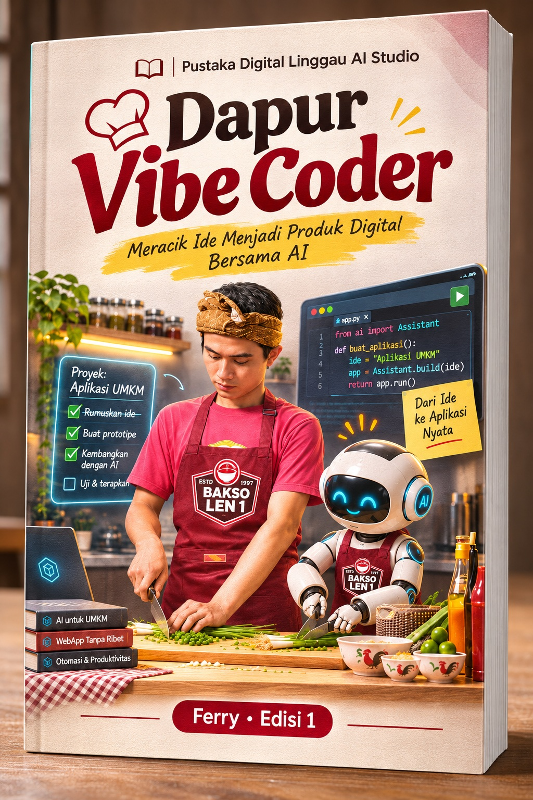

Dapur Vibe Coder
Meracik Ide Menjadi Produk Digital Bersama AI.
Ferry · Edisi 1 · 4 November 2026 · 63 halaman PDF
Tanpa biaya dan tanpa login member.
Sebelum membaca
Buku ini adalah intisari jurnal belajar saya dari nol: pelaku usaha kuliner yang membangun aplikasi kasir dan stok dengan bantuan AI. Saya bukan programmer profesional.
Ada bagian yang sudah saya pakai di lapangan, ada yang baru contoh ilustrasi, dan ada yang belum saya uji. Saya membedakan ketiganya agar kamu bisa mengikuti prosesnya dengan jujur. Koreksi dan pengalamanmu sangat saya hargai.
Yang akan dipelajari
- Menyiapkan Dapur — perjalanan, batas AI, kebutuhan usaha dan perangkat kerja.
- Meracik Resep — spesifikasi, prompt, konteks, agent dan checkpoint.
- Mulai Memasak — HTML, CSS, JavaScript, GitHub, API dan database.
- Menguji Sebelum Menyajikan — debugging, keamanan, backup, staging dan GO LIVE.
- Menyajikan Produk Nyata — Bakso Len 1, portofolio, biaya dan pemeliharaan.
Cara membaca
Pengalaman nyata saya.
Gambaran konsep untuk belajar.
Rencana atau hal yang belum punya bukti uji.
Baca secara kritis, bukan sebagai jaminan hasil. Harga, kuota, dan ketentuan layanan dapat berubah. Buku ini bukan nasihat hukum, audit keamanan, atau nasihat keuangan.
Simpan buku
PDF untuk HP atau komputer; EPUB untuk aplikasi pembaca eBook.
Belajar · Chapter 1
Ikuti materi dasar bersama komunitas. Gratis Rp0, tanpa wajib menjadi member berbayar.
Hak cipta & distribusi
Gratis untuk dibaca dan disimpan secara pribadi. Bagikan tautan pustaka resmi. Penjualan kembali atau penerbitan ulang memerlukan izin, kecuali yang diperbolehkan hukum. Ketentuan lengkap.